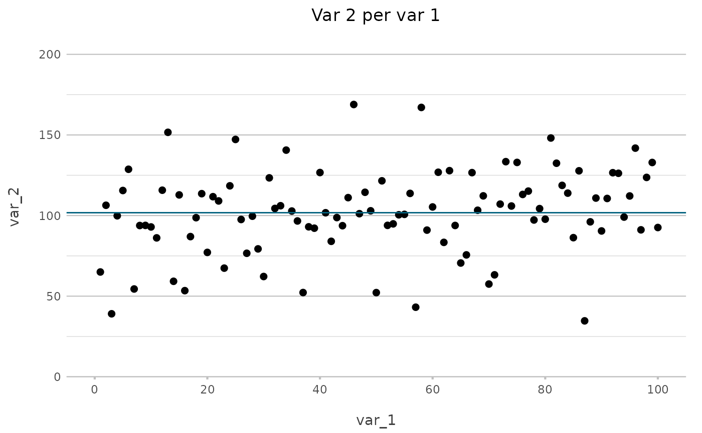
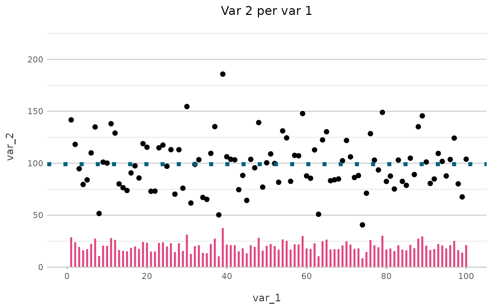
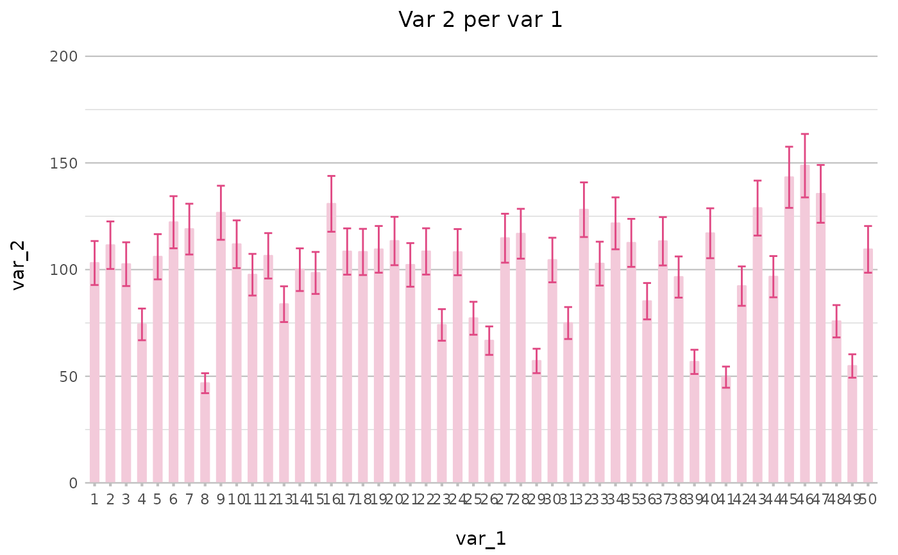
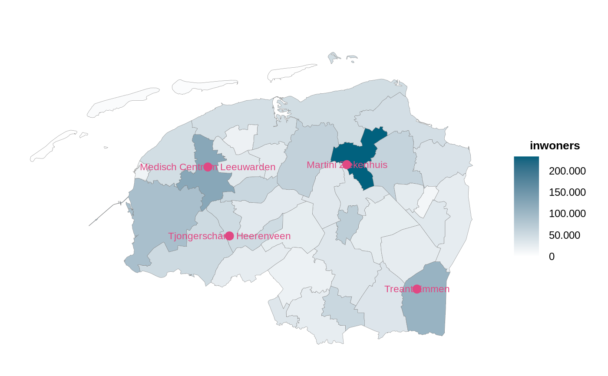
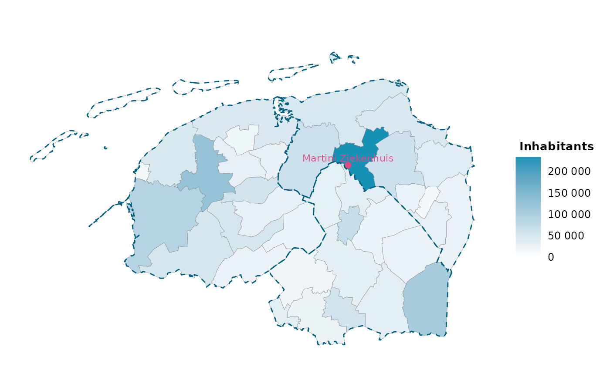

Quickly add a new 'geom' to an existing plot2/ggplot model. Like plot2(), they support tidy evaluation, meaning that variables can be unquoted. They can be added using the pipe (new base R |> or tidyverse %>%).
add_type(plot, type = NULL, mapping = aes(), ...)
add_line(
plot,
y = NULL,
x = NULL,
group = 1,
colour = "certeblauw",
linetype,
linewidth,
...,
inherit.aes = TRUE
)
add_point(
plot,
y = NULL,
x = NULL,
group = 1,
colour = "certeblauw",
size,
shape,
...,
inherit.aes = TRUE
)
add_col(
plot,
y = NULL,
x = NULL,
colour = "certeblauw",
colour_fill = "certeblauw",
width,
...,
inherit.aes = TRUE
)
add_errorbar(
plot,
min = NULL,
max = NULL,
y = NULL,
x = NULL,
colour = "certeroze",
width = 0.5,
...,
inherit.aes = TRUE
)
add_sf(
plot,
sf_data,
colour = "certeblauw",
colour_fill = "certeblauw",
size = 2,
linewidth = 0.1,
datalabels = NULL,
datalabels.colour = colour,
datalabels.size = 3,
datalabels.angle = 0,
datalabels.font = getOption("plot2.font"),
datalabels.nudge_y = 2500,
...,
inherit.aes = FALSE
)a ggplot2 plot
a ggplot2 geom name, all geoms are supported. Full function names can be used (e.g., "geom_line"), but they can also be abbreviated (e.g., "l", "line"). These geoms can be abbreviated by their first character: area ("a"), boxplot ("b"), column ("c"), histogram ("h"), jitter ("j"), line ("l"), point ("p"), ribbon ("r"), violin ("v").
a mapping created with aes() to pass on to the geom
aesthetic arguments
arguments passed on to the geom
colour of the line or column, will be evaluated with certestyle::colourpicker(). If colour_fill is missing but colour is given, colour_fill will inherit the colour set with colour.
a logical to indicate whether the default aesthetics should be inherited, rather than combining with them
minimum (lower) and maximum (upper) values of the error bars
an 'sf' data.frame, such as the outcome of certegis::geocode()
a column of sf_data to add as label below the points
properties of datalabels
is datalabels is not NULL, the amount of vertical adjustment of the datalabels (positive value: more to the North, negative value: more to the South)
The function add_line() will add:
geom_hline() if only y is provided and y contains one unique value;
geom_vline() if only x is provided and x contains one unique value;
geom_line() in all other cases.
The function add_errorbar() only adds error bars to the y values, see Examples.
df <- data.frame(var_1 = c(1:100),
var_2 = rnorm(100, 100, 25))
df |>
plot2() |>
add_line(mean(var_2))
#> i Using x = var_1
#> i Using y = var_2
#> i Using type = "point" since both axes are numeric
#> i Adding type hline

df |>
plot2() |>
add_line(y = mean(var_2),
linewidth = 2,
linetype = 3) |>
add_col(y = var_2 / 5,
width = 0.25,
colour = "certeroze")
#> i Using x = var_1
#> i Using y = var_2
#> i Using type = "point" since both axes are numeric
#> i Adding type hline

if (require("dplyr", warn.conflicts = FALSE)) {
df2 <- df |>
as_tibble() |>
filter(var_1 <= 50) |>
mutate(error1 = var_2 * 0.9,
error2 = var_2 * 1.1)
print(df2)
df2 |>
plot2(type = "c", colour = "certeroze4") |>
# add the error bars, simply by referencing the lower and upper values
add_errorbar(error1, error2)
}
#> Loading required package: dplyr
#> # A tibble: 50 × 4
#> var_1 var_2 error1 error2
#> <int> <dbl> <dbl> <dbl>
#> 1 1 155. 140. 171.
#> 2 2 139. 125. 153.
#> 3 3 73.7 66.3 81.1
#> 4 4 92.8 83.5 102.
#> 5 5 89.0 80.1 97.9
#> 6 6 60.8 54.8 66.9
#> 7 7 141. 127. 155.
#> 8 8 68.7 61.8 75.6
#> 9 9 101. 91.3 112.
#> 10 10 63.6 57.2 69.9
#> # ℹ 40 more rows
#> i Using x = var_1
#> i Using y = var_2
#> i Using x.character = TRUE for discrete plot type (geom_col) since var_1 is numeric
#> ! Omitting printing of 50 datalabels - use datalabels = TRUE to force printing

if (require("certestats", warn.conflicts = FALSE)) {
df |>
plot2() |>
add_line(y = ewma(var_2, 0.75),
colour = "certeroze",
linewidth = 1)
}
#> Loading required package: certestats
#> i Using x = var_1
#> i Using y = var_2
#> i Using type = "point" since both axes are numeric

if (require("certegis")) {
hospitals <- geocode(c("Martini Ziekenhuis",
"Medisch Centrum Leeuwarden",
"Tjongerschans Heerenveen",
"Treant Emmen"))
geo_gemeenten |>
crop_certe() |>
plot2(datalabels = FALSE,
category.title = "Inhabitants",
colour_fill = c("white", "certeblauw2")) |>
add_sf(hospitals,
colour = "certeroze",
datalabels = place) |>
add_sf(geo_provincies |> crop_certe(),
colour_fill = NA,
colour = "certeblauw",
linetype = 2,
linewidth = 0.5)
}
#> Loading required package: certegis
#> Linking to open data from Statistics Netherlands:
#> * 'Kerncijfers per postcode': ZIP 2020 v1
#> * 'Gebiedsindelingen': GPKG 2022 v1
#> * 'Bevolking per geslacht per postcode' (data set 83503NED): 1 januari 2021
#> * 'Bevolking en leeftijd per postcode' (data set 83502NED): 1 januari 2021
#> i Using category = inwoners
